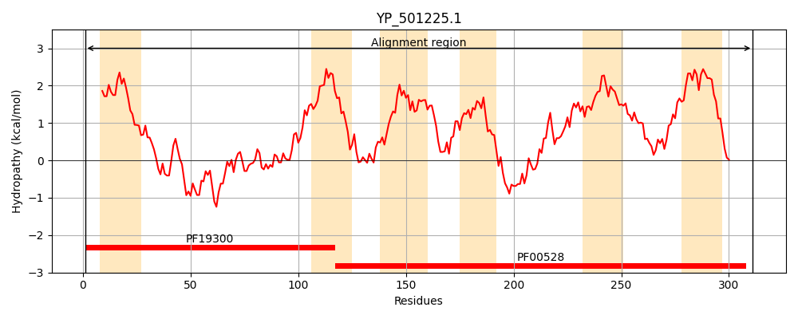
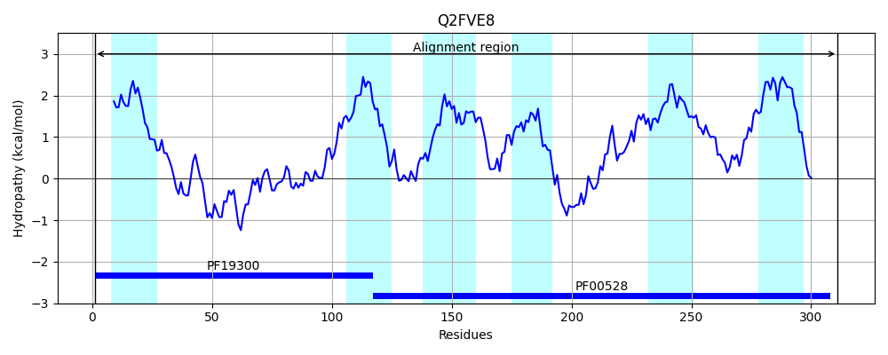

Hit Accession: Q2FVE8
Hit TCID: 3.A.1.5.43
Hit Description: gnl|BL_ORD_ID|13228 gnl|TC-DB|Q2FVE8|3.A.1.5.43 Peptide ABC transporter, permease protein, putative OS=Staphylococcus aureus (strain NCTC 8325) GN=SAOUHSC_02766 PE=3 SV=1
Mach Len: 311
e:0.000000
Query TMS Count : 6
Hit TMS Count: 6
TMS-Overlap Score: 6.050000
Predicted Substrates:None
BLAST Alignment:
Score: 1550 , Bit scores: 601 bits, E-value: 0.0e+00, Alignment length: 311, Percentage identity: 100
Query: 1 MFKFILKRIALMFPLMIVVSFMTFLLTYITNENPAVTILHAQGTPNVTPELIAETNEKYGFNDPLLIQYKNWLLEAMQFNFGTSYITGDPVAERIGPAFMNTLKLTIISSVMVMITSIILGVVSALKRGKFTDRAIRSVAFFLTALPSYWIASILIIYVSVKLNILPTSGLTGPESYILPVIVITIAYAGIYFRNVRRSMVEQLNEDYVLYLRASGVKSITLMLHVLRNALQVAVSIFCMSIPMIMGGLVVIEYIFAWPGLGQLSLKAILEHDFPVIQAYVLIVAVLFIVFNTLADIINALLNPRLREGAR 311
MFKFILKRIALMFPLMIVVSFMTFLLTYITNENPAVTILHAQGTPNVTPELIAETNEKYGFNDPLLIQYKNWLLEAMQFNFGTSYITGDPVAERIGPAFMNTLKLTIISSVMVMITSIILGVVSALKRGKFTDRAIRSVAFFLTALPSYWIASILIIYVSVKLNILPTSGLTGPESYILPVIVITIAYAGIYFRNVRRSMVEQLNEDYVLYLRASGVKSITLMLHVLRNALQVAVSIFCMSIPMIMGGLVVIEYIFAWPGLGQLSLKAILEHDFPVIQAYVLIVAVLFIVFNTLADIINALLNPRLREGAR
Sbjct: 1 MFKFILKRIALMFPLMIVVSFMTFLLTYITNENPAVTILHAQGTPNVTPELIAETNEKYGFNDPLLIQYKNWLLEAMQFNFGTSYITGDPVAERIGPAFMNTLKLTIISSVMVMITSIILGVVSALKRGKFTDRAIRSVAFFLTALPSYWIASILIIYVSVKLNILPTSGLTGPESYILPVIVITIAYAGIYFRNVRRSMVEQLNEDYVLYLRASGVKSITLMLHVLRNALQVAVSIFCMSIPMIMGGLVVIEYIFAWPGLGQLSLKAILEHDFPVIQAYVLIVAVLFIVFNTLADIINALLNPRLREGAR 311 | Protein Hydropathy Plots: |
|---|
|  |  |
Pairwise Alignment-Hydropathy Plot:
|
|---|
 |